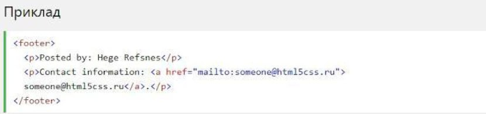

- чітко
визначає його зміст.
Підтримка браузерів
Семантичні елементи HTML5 підтримуються у всіх сучасних браузерах.
Крім того, ви можете "навчити" старих браузерів, як обробляти "невідомі
елементи".
Прочитайте про це в підтримці браузера HTML5.
Нові семантичні елементи в HTML5
HTML5 пропонує нові семантичні елементи для визначення різних частин
веб-сторінки:
●
HTML5
Елемент визначає розділ в документі.
Згідно з документацією в3к'с HTML5: "розділ представляє собою
тематичну угруповання контенту, зазвичай з заголовком".
Домашня сторінка зазвичай може бути розділена на розділи для
ознайомлення, змісту і контактної інформації.

HTML5 елемент
Елемент визначає незалежний, автономний вміст.
Стаття повинна мати сенс самостійно, і вона повинна мати можливість
читати його незалежно від іншої частини веб-сайту.
Приклади того, де можна використовувати елемент :
● Повідомлення на форумі
● блозі
● Газетна стаття

HTML5
Елемент задає заголовок для документа або розділу.
Елемент повинен використовуватися в якості контейнера для
вступного змісту.
В одному документі може бути кілька елементів .
У наступному прикладі визначається заголовок для статті:
HTML5
Елемент
